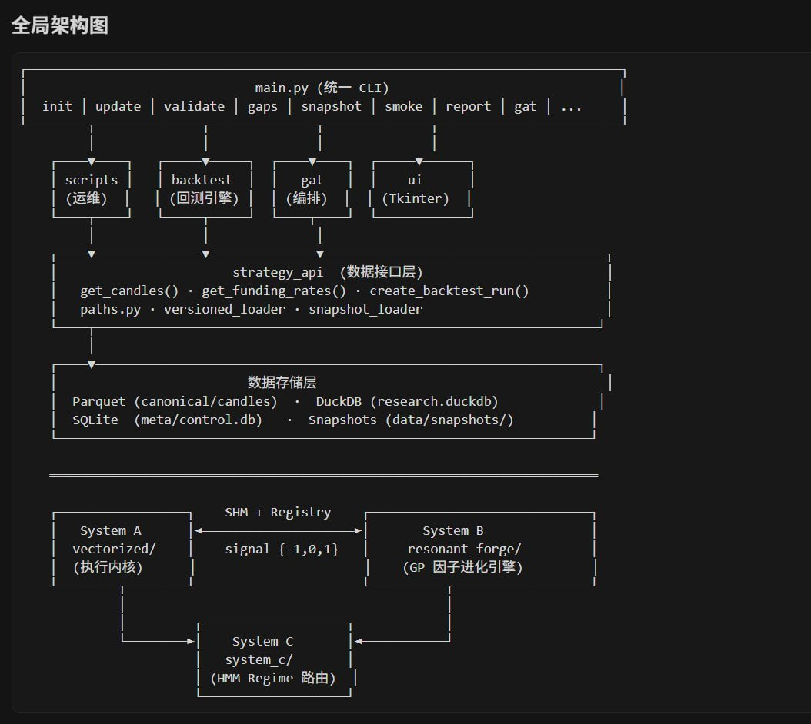

Wilf Lin
@Wilf_Lin
@CryptoPainter 研究了各种交易策略和量化交易系统设计之后我决定直接买deepseek的基金

Crypto_Painter
@CryptoPainter
两个通宵，自进化量化系统终于搞出来了...
说实话是真的费钱...
GPT5.4花了500u，Claude花掉了500U，然后跑了一遍，迭代出来的首个动态策略年化23%，最大回撤17%，远远不及我的预期...
于是又找 Gemini3.1 去给我出主意，在此期间订阅了Ultra，还升级了Cursor的会员，又是300u...
结果就是... https://t.co/YSIzehdaVH https://t.co/L2eOlx5q4J